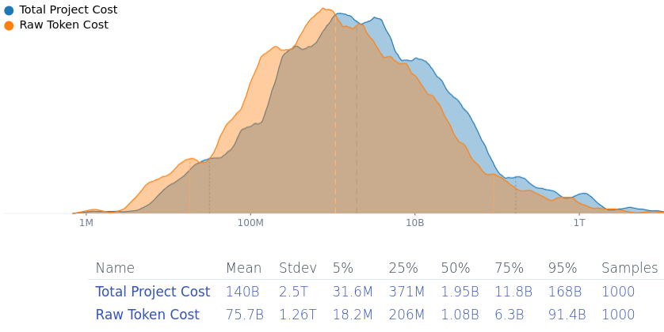

author: niplav, created: 2025-02-20, modified: 2025-02-27, language: english, status: finished, importance: 5, confidence: log
Trying to make the internet secure from takeover by advanced AI systems by removing exploits from open-source software would cost at least ~$31 mio./~$1.9 bio./~$168 bio. (5th/50th/95th percentile estimate), mean estimate ~$140 bio. But hardware or software/hardware hybrid vulnerabilities are harder to fix, and open-source maintainers would be overworked.
Preventative measures discussed for averting an AI takeover attempt include hardenening the software infrastructure of the world against attacks. The plan is to use lab-internal (specialized?) software engineering AI systems to submit patches to fix all findable security vulnerabilities in open-source software (think a vastly expanded and automated version of Project Zero, and likely to partner with companies developing internet-critical software (in the likes of Cisco & Huawei).
I think that that plan is net-positive. I also think that it has some pretty glaring open problems (in ascending order of exigency): (1) Maintainer overload and response times, (2) hybrid hardware/software vulnerabilities, and (3) cost as a public good (also known as "who's gonna pay for it?").
If transformative AI is developed soon, most open source projects (especially old ones relevant to internet infrastructure) are going to be maintained by humans with human response times. That will significantly increase the time for relevant security patches to be reviewed and merged into existing codebases, especially if at the time attackers will submit AI-generated or co-developed subtle exploits using AI systems six to nine months behind the leading capabilities, keeping maintainers especially vigilant.
My impression is that vulnerabilities are moving from software-only vulnerabilities towards very low-level microcode or software/hardware hybrid vulnerabilities (e.g. Hertzbleed, Spectre, Meltdown, Rowhammer, Microarchitectural Data Sampling, …), for which software fixes, if they exist, have pretty bad performance penalties. GPU-level vulnerabilities get less attention, but they absolutely exist, e.g. LeftoverLocals and JellyFish. My best guess is that cutting-edge GPUs are much less secure than CPUs, since they've received less attention from researchers and their documentation is less easily accessible. (They probably have less cruft from bad design choices in early computer history.) Hence: Software-only vulnerabilities are easy to fix, software/hardware hybrid ones are more painful to fix, hardware vulnerabilities escape quick fixes (in the extreme demanding recall like the Pentium FDIV bug). And don't get me started on the vulnerabilities lurking in human psychology, which are basically impossible to fix on short time-scales…
Finding vulnerabilities in all the relevant security infrastructure of the internet and fixing them might be expensive. 1 mio. input tokens for Gemini 2.0 Flash cost $0.15, and $0.60 for output tokens—but a model able to find & find fixes to security vulnerabilities is going to be more expensive. An AI-generated me-adjusted Squiggle model estimates that it'd cost (median estimate) ~$1.9 bio. to fix most vulnerabilities in open-source software (90% confidence-interval: ~$31 mio. to ~$168 bio., mean estimated cost is… gulp… ~$140 bio.).

(I think the analysis under-estimates the cost because it doesn't consider setting up the project, paying human supervisors and reviewers, costs for testing infrastructure & compute, finding complicated vulnerabilities that arise from the interaction of different programs…).
It was notable when Google paid $600k for open-source fuzzing, so >~$1.9 bio. is going to be… hefty. The discussion on this has been pretty far mode and "surely somebody is going to do that when it's “so easy”", but there have been fewer remarks about the expense and who'll carry the burden. For comparison, the 6-year budget for Horizon Europe (which funds, as a tiny part of its portfolio, open source projects like PeerTube and the Eclipse Foundation) is 93.5 bio. €, and the EU Next Generation Internet programme has spent 250 mio. € (2018-2020)+62 mio. € (2021-2022)+27 mio. € (2023-2025)=~337 mio. € on funding open-source software.
Another consideration is that this project would need to be finished quickly—potentially less than a year as open weights models catch up and frontier models become more dangerous. So humanity will not be able to wait until the frontier models become cheaper so that it'll be less expensive—as soon as automated vulnerability finding becomes, both attackers and defenders will be in a race to exploit them.
So, a proposal: Whenever someone claims that LLMs will d/acc us out of AI takeover by fixing our infrastructure, they will also have to specify who will pay the costs of setting up this project and running it.